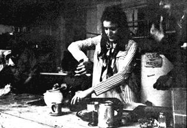

ARTICLE BY MICHAEL BENNETT
PHOTO BY MARC MAZZARELLA REPRINTED BY PERMISSION
FROM ZYGOTE MAGAZINE,
80 FIFTH AVENUE, NEW YORK,
N.Y. 10011/$5.00 A YEAR
"The Loft," as it is called by its denizens, is one of the rapidly growing number of city communes that have sprung up in New York and other urban conglomerates in recent years. As with most new endeavors, all the commune members are intent upon making it a success – a place where they will be free to express themselves and pursue their chosen interests, a central unit where they live and work together toward creating an alternative lifestyle.
I was very interested in understanding the workings of a city commune, realizing that if such a thing caught on in the huge metropolises of Amerika, that the whole idea and function of the city would change from a place which departmentalizes people, to a place which brings people together harmoniously to work toward their common and individual goals.
The Loft, according to Finley, an articulate and together member, "is a widely diverse group of pe ople in a highly pressurized urban situation . . . a kind of situation where everybody can get his own head together, his own talent together, his own interest together . . . really make them work the way he wants them to, and yet let the total thing flow as a very real organic community." The word 'organic' means that the community will evolve in its own particular way, the variables being the people who live together. Laws in themselves will not be imposed, but will be organically developed to suit the needs of each person as well as the commune as a whole.
I had originally planned to conduct an informal interview with some of the communards, having brought with me a list of questions which I thought would more or less, cover what the commune was about. It didn't take me very long to see that this was too structured, and wouldn't work at all; after a half-hour or so, we broke up our little circle. I walked around the commune talking to members as they went about their everyday tasks. This was much more to their liking and they were freer to discuss their feelings, impressions, and ideas with me than they had been in the interview situation.
I was first taken on a tour of the commune to get a sense of the physical layout, its possibilities and its limitations. The commune itself occupies two loft-sized floors in an old building on lower 2nd Avenue, Manhattan. The main floor contains a huge kitchen-dining area, with a table big enough to seat all 27 communards and various friends during meals. (There were also 6 cats and a rabbit.)
Next to the kitchen is a living room area which has a few chairs, some floor cushions and sound equipment for entertainment. In another room is the office of the Earth People's Park organization, whose purpose is to get land for the people (all people). Just off that is the office of Negative Entropy, an organization begun by Paul, a biologist, Harry, an engineer and Bruce, who are trying to get a government grant for their project of freezing foods without chemicals. Another project is concerned with cryogenics, or the freezing of bodies for life extension. This floor also has a huge general meeting room about the size of a large dance floor. There are four bathrooms, and the day we were there, a six-headed shower had just been installed.
Upstairs are the sleeping quarters; a communal room where several members of the commune sleep on floor mattresses; another large room is being partitioned off for private sleeping quarters. Dick, one of the communards, is a writer and described the situation this way:
"Basically, when we started the commune, we tried to set up a private area and a communal area, a concept that hasn't worked out, to the best of my knowledge, in any other commune. Most communes are immediately walls down, and many people are put into a situation that they can't cope with . . . We went through this at many meetings . . . what it boiled down to is this – if people need private space, these people will be taken care of as well as those who need communal space."
The operation of a city commune is especially interesting to me because until recently, I had always identified communal living with being in the wood, getting back to nature.
"The commune is a base from which to operate . . . There's no attempt to make everyone think, behave, act or get involved in the same type of things; this would be contrary to the nature of what we're trying to do . . . The commune itself is an experiment in life-style.
Many communards foresee that the communizing now taking place will eventually result in a nationwide network of communes in both the cities and the country. The people at The Loft are currently involved in the Alternate U's group on communes, where knowledge and resources of all communes can be pooled to make the communal operations of each flow more smoothly. They are hoping to get together several city communes and approach farmers and offer them complete purchase of their crops if they grow only organic foods.
If this is successful, such an arrangement could be expanded to a national scale; sympathetic farmers who don't want to screw up their soil with chemicals, as well as people living and working on country communes, could grow exclusively organic crops in order to supply the city communes and themselves. In this way, the communes could establish themselves as a self-sufficient society, at least as far as the basics are concerned. The success of this large-scale project would be enormously valuable as a living, working illustration that people only have to work to live and to help others live.
This could also lead to exchange programs between city and country communes. Members of a city commune go to a country commune and vice-versa for periods of time to kelp run the respective communes that they are visiting.
People in the city would then be educated in the fundamentals of farming and country life, and the country people could come to the city to get themselves together in ways which require the resources the city has to offer.
The educational value of a commune set-up is also enormous. For children, there will be no repression of their ideas and instincts. Tools will be available as the new lifestyle creates a new technology aimed towards self-fulfillment rather than production.
Before starting the commune, the founders met several times with the Hog Farmers to discuss the problems that would arise in the formative stages. They told me that in spite of the rapping, they still went through pretty much the same changes that the Hog Farm had gone through in getting itself together. Finley said:
"I don't think you can learn anything except from gut level experience . . . so we always repeat the same mistakes. Things get together for a couple of days and then start to come apart . . . people realize the crisis and get it together again . . . But each time we go through a crisis we come together a little more . . . we begin to think of some free, but viable, orderly way to make our existence work . . . Anybody who doesn't want to do something . . . that should be OK . . . If they don't want to come to meetings, they can work in the kitchen . . . the totality will flow to gether . . ." The general feeling was . . . "when you see something has to be done, you do it."
Larry Speed Freak, who greeted us at the door with a torrent of words which were mostly un-understandable, described the reason for the commune: "The purpose of people getting together like this is so each person can do his own thing and teach his thing to other people . . . Like, you can learn more in a place like this than in any other place in the world, because you have somebody here who knows how to do something else . . . I'm a photographer. Pedro puts up bubbles. He helped construct the one at Union Square on Earth Day , and is currently involved in the design and construction of inflatables, and Finley just things . . .
More generally, the purpose of the commune and of communes is to create an alternative society. In this sense, communes are to some degree political. Because the purpose of the commune is to eliminate the formal structures that keep us compartmentalized, these politics are of a different ilk than the politics we are so used to.
" . . . We are opposed, in principle, to ideologies. We want good relationships with any group that is in anyway making a contribution towards constructive changes in society . . . We're primarily concerned with finding creative ways and effective means, which is where both the arts and sciences come into our trip. For us, it is essentially a creative revolution; with the creative imagination you can solve every problem that arises, and you can alter your course of action any time you encounter resistance to it. The imagination can think up one or a number of alternatives so you can always keep moving , . . If you have one ideology and a plan of action and one of those are blocked, then the movement is stopped . . . So creativity is not only a means for the Revolution, it is the ultimate style of life for us, too . . . which is why we're interested in artists and technologists being able to do their thing here. The one thing that everybody has in common, whether they're artists or scientists, is that they're looking for an alternative life that is more creative, more together, more fully human . . . more real."
It was stressed that this 'alternative' had to be open to everyone, from acid freaks to corporation executives. Everyone should be able to see that there is a better way to live than the way they are living now. The commune will be the place where art and technology complement one another; artist, write, biologist, typist et al will unite in common human endeavors, learning from each other, rather than boxed into isolated specialties.
Barbara – who is not a formal member of the commune, but who visits quite often – is trying to set up a Grotowski theatre techniques-and-encounter workshop at the commune. She views it as "a way of people communicating non-verbally, and how to be loose together, and learning how to dig each other . . . get their bodies and get their minds in shape . . . it just liberates you. I see it as a way of really relaxing and communicating directly . . . when you're relaxed, you can get anything accomplished." After dinner, she had a little sensitivity group going, teaching people various excercises that they could perform individually or together.
Members and friends came over to participate or watch, and at this time one could really see the flow of the commune. People who weren't involved in her thing were doing something else; cleaning up after the dinner; sitting in one of the rooms and rapping; running around the meeting room. There was no feeling that you had to do one thing or another, that one thing was more important than another.
On a personal, as well as a communal level, there are several problems which are implicit in so many people living together. One of the most obvious is the problem of privacy. As one of the communards already mentioned, the Loft is set up for private quarters as well as communal quarters, depending on each person's needs. "When I feel that I want to be alone, it just happens, you know, people are really sensitive to me, and I'm sensitive to them." As it turns out, most of the communards find that if they need to be alone there is usually someplace they can go, and if things are really too hectic, they leave the commune for a while.
They don't see the need for privacy impinging on them; it doesn't happen often, and more important, no one really gets uptight when it does happen.
Another problem is finances. Right now, because the building is in shoddy condition, there is not any rent to be paid. Some of the members have jobs on the outside; some are artists and writers and they make bread that way when they need it. Everyone, however, spends a good deal of time working on the commune, preparing the private living quarters, building things. Another room, off the living quarters, is in a state of total disarray; eventually, they plan to rebuild it as a biology laboratory and a dark room. This takes bread and everyone contributes what they can. Surprisingly, there is enough money now to do what must be done, and the rule that each person has to contribute $50 a month has not had to be enforced. Some people have put in a lot more, some a lot less. If money does become a problem, they'll cope when the time comes.
Many communes have been troubled by crashers who are not a part of the commune. Ideally, there would be accommodations for visitors, but due to the lack of space, some restrictions may be necessary. Pedro said "it depends on your mood – sometimes you get mad at everybody and throw everybody out . . . sometimes it's OK". Sara: "Somebody who isn't welcome here wouldn't want to stay"; Finley: "Opinions vary from people who feel that all doors should be open all the time to those who feel all doors should be closed as far as private living space is concerned. Friends are helpful once we can get ourselves together . . . When we're not together, the ideas of other people only make confusion. Problems are worked out by virtue of living together and the process of caring for each other. This is the compassionate revolution."
The ratio of men to women (3:1) is a problem felt equally by men and women. I asked Gypsy if the women had anything like a WLF group to discuss their specific problems.
"Women's Lib. is a word that really turns a lot of people off, and a lot of the media on Women's Lib. is calculated to turn people off . . . We decided to rename it Women's Celebration . . . We want to have a skills-exchanging program . . . (to) learn from each other carpentry, electricity, driving a stick shift . . . "
I asked her if she would like to see a better men-to-women ratio: "Yeah, I think if it could be managed . . . It would be better for me!"
This brings up the sexual problems that are bound to occur in such living arrangements. One of the communards stated that there was hardly any sex going on, at least in the communal room. Many of the other members didn't have much to say on the subject and felt that it was a matter of individual taste. Some felt that the sexual atmosphere should be freer, with everyone having the chance to sleep with everyone else, or that no two people should couple off, because this would exclude other members from relating to these people in an open way. This, though, has not been discussed communally and might be a problem that will emerge in the near future.
The last person I spoke to at length was Jim, a fellow from Chattanooga who had only been in the North for three months. I asked him how he felt about living in the North:
"The North is a lot less paranoid, and if you have long hair you don't have to worry about it. I've never been in a situation where I could walk down the street, like in the East Village, and see all those people with long hair, and all those people freaking out . . . and they just walk right on along and they don't worry about it . . . In the South when you're walking along with long hair, you're constantly suspicious, people screaming out of windows at you . . .I just feel relaxed . . . I'm still in the process of getting used to it."
I asked him what the commune meant to him. " . . . it's new for me . . . it's making a great deal of difference . . . all these communal things . . . it's a good feeling . . . the kind of relaxed thing here is the kind of thing I would get from my family . . . The case with which I can talk to someone, the case with which I can get to know someone is great . . . It will never be the same kind of living in a box anymore . . . There'll always be an element of communal living in my life . . . "
Without noticing it, I had spent five hours at the commune, and as I was getting ready to leave, many of the members came over to me for a last rap, and to invite me back again. I felt that talking with these people had gotten to me into a place where communal living couldn't be far off. The feeling is beautiful when you're with people who are working towards the same thing that you are, each in his own way.
As I walked out onto 2nd Avenue, the street seemed more peaceful and quiet than it had in a long time. I knew that it wouldn't be too long before I would be back.
|
 |
|
|